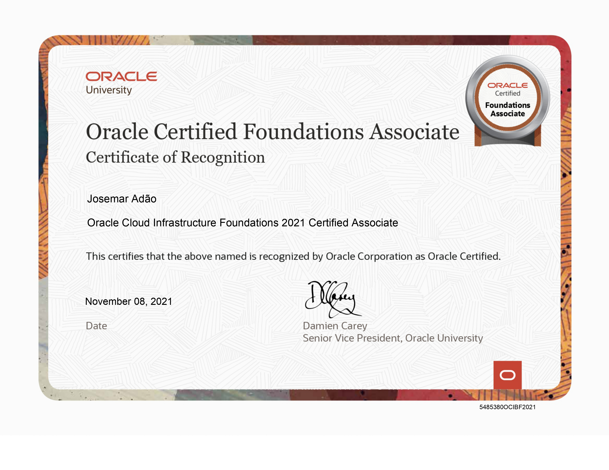

Certificações e Treinamentos



Especialista em soluções de infraestrutura de TI com mais de 9 anos de experiência em implementação, otimização e gestão de ambientes complexos.
Possuo habilidades em Cloud Computing, datacenters e gestão de hypervisors como Hyper-V, ESXi e XenServer. Backup com Veeam e Veritas, garantindo a integridade e a proteção dos dados.
Gestão de firewalls como Fortigate, Sophos, Cisco ASA, Palo Alto, OPNSense, pfSense e Kerio Control, assegurando a segurança da infraestrutura de rede.
Monitoramento de rede com PRTG e Zabbix, garantindo a disponibilidade e o desempenho dos serviços bem como a gestão de inventários de TI com System Center, OSC Inventory, Spiceworks, Lansweeper, e PDQ Inventory.
Entre em contatoAWS, Azure, Google Cloud Platform, arquitetura em nuvem, migração de aplicações
Virtualização, containers, Kubernetes, Docker, redes, segurança
Automação, monitoramento, TCP/IP, VLANs, QoS, VPNs, roteamento estático
Cybersegurança, compliance, auditorias, gestão de riscos

Restruturação e reorganização dos cabos de rede nos bastidores, etiquetação de cada cabo com informações como o nome do dispositivo/área que ele conecta.

Restruturação da infraestrutura de rede e realocação do datacenter principal, a fim de otimizar o desempenho e implementar novas dedidas de segurança.

Migração da firewall fortigate para uma solução open source (pfsense), instalação, configuração de mail-server e formação aos técnicos locais.

Configuração e-mail e definir políticas de segurança para proteger contra spam, phishing e outras ameaças. Realizar inventários de ativos de TI, incluindo hardware, software e configurações de rede.

Gestão do Active Directory e todos os objectos que nele contêm. Instalação física e configuração de computadores, incluindo a montagem de hardware, instalação de sistemas operacionais e softwares essenciais
Foram implementadas as mudanças planejadas, incluindo a atualização de hardware e software, a reestruturação de endereços IP, a mudança de topologia de rede e a implementação de medidas de segurança com uma firewall Fire Power.

Administrador das plataformas Azure, Microsoft 365, VMware, Hyper-v, Fortigate. Incluindo a manutenção de permissões de GPOs e desenvolvimento da documentação para uso futuro de TI.

Gestão e configuração avançada de máquinas virtuais para venda. Isso inclui serviços críticos como DHCP, DNS e VPNs para garantir a estabilidade e segurança das máquinas virtuais.

Executar configurações avançadas de Networking em switches e routers, incluindo Routing , Vlan, UDP, Trunk ports, Port states e solucionar problemas de TCP/IP e protocolos de rede relacionados.

Aplicação de patch de segurança. Configuração de auto discovery e active sync para o exchange sever 2010.

Exportação de relatorios e manutenção de operações de políticas de backup com com o veeam
Implemnetação do ambiente de telefonia Cisco Unified Communications Manager 12.5.
Prestação de serviços, realizando análises detalhadas, planejamento e implementação de soluções com base nas necessidades específicas dos clientes. Desenvolvendo planos para melhorar ou otimizar suas infraestruturas e aplicações. Isso pode envolver a implementação de novas tecnologias, atualizações de software, migrações para a nuvem ou otimização de recursos existentes.
Administração do Active Directory, Exchange Server, DHCP, DNS. Corrigir problemas de configuração de servidores e estações de trabalho, definição de um plano de backup e recuperação de dados, administração de rede e outros.Atender aos tickets dos utilizadores, em muitos casos os tickets não estão relacionados a um problema, mas sim a duvidas sobre o uso de aplicações, recuperação de passwords de acesso aos sistemas, entre outras questões relacionadas as suas atividades diarias.
Estou sempre interessado em novos projetos e desafios.